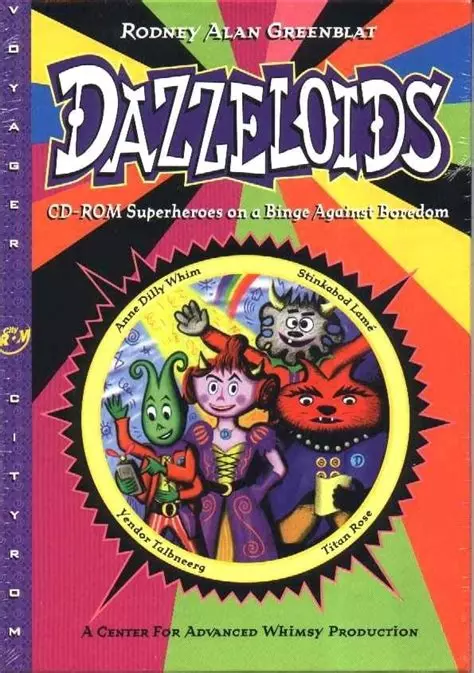

Origins
The history of PaRappa The Rapper dates back to 1993, when Masaya Matsuura, then the founder and leader of the band Psy-S creates the company NaNaOnsha in order to work on video games after the success of his first CD-ROM The Seven Colors - Legend of PSY-S City.
Somewhere around that time, the aspiring American artist Rodney Alan Greenblat met an agent from a company called Interlink named Taki Wayoshi. Wayoshi represented American illustrators, and Rodney quickly accepted the job. His very first job as an artist aiming at a Japanese audience was a poster for Sony's Handycam, which ended up becoming extremely successful, leading to the beginning of his popularity in Japan.
In 1994, Rodney released his CD-ROM storybook Dazzeloids for the Mac, and he decided to show it at a Mac conference in Tokyo, which became a hit among the attendants there too, which convinced him to create a Japanese version of it.
In that exact same year, Masaya Matsuura got the original idea
for PaRappa the Rapper - a music game starring a cute, wacky
protagonist out of a whim, and confident in taking some
bets, he decided to tell various video game companies about it,
including Sony, which would show itself to be the most receptive to
the idea, especially since Matsuura felt that the PlayStation was
the best system to make the game for.
...And it just happened that around the same time, Rodney had just
gotten a contract with Sony Creative Products, a licensing division
of Sony through his contact with Wayoshi, and Sony Creative Products
 wanted Rodney to create some characters to create merchandise with
- leading to the creation of the characters PJ Berri, Sunny Funny,
Katy Kat and a fourth character named Pony Pony that didn't really
make the cut to the final game.
wanted Rodney to create some characters to create merchandise with
- leading to the creation of the characters PJ Berri, Sunny Funny,
Katy Kat and a fourth character named Pony Pony that didn't really
make the cut to the final game.
Two Creators Meet
While Matsuura had planned the game to be illustrated by Rodney
after presumably learning about Dazzeloids, and his wife, Kiri, who
was an artist herself knew about Rodney's work from his storybooks,
it was nothing but a surprise to Rodney when he got a call from Sony
Computer Entertainment (SCEI) about Matsuura's plans for what would
end up becoming PaRappa The Rapper.
When Rodney went to SCEI's headquartes, he ended up being completely
amazed by the dinosaur head tech demo that the people there showed
him.
After that, he was asked to be the designer for the new game that was
on the planning works, but refused because he didn't really think he
was sure that his own art was going to look good on 3D - but following
that, Matsuura said to him "No, no, we want to do it in 2D. We want
to have 2D characters running around in a 3D world", referring to
the 'paper thin' art style Matsuura had in mind for the game.
This idea was accepted by everyone on the team, including Rodney
himself.
Development
Following this, it was time for Rodney to start working on the
characters as Matsuura's team started working on the game.
First, Sony Creative Products licensed the four characters that
Rodney had made for the RodneyFun merchandise line to SCEI, which
meant that Matsuura could use them for the game.
PaRappa, the main character himself was created with the idea of
someone that was 'cute, faithful and loyal', and while originally
intended to be of another species, Rodney quickly came up with
the idea of making him a dog, to which Matsuura agreed on.

After PaRappa's design was done, the rest of the cast was created,
including the teachers and side characters. Sometimes Matsuura had
the original idea of how they'd be like and Rodney would try to make
the design represent it, like with Instructor Mooselini, sometimes
Ito had a clear idea of the character's appearance and Rodney had
to match it, and sometimes Rodney just guessed how the character
would be based on what they did, most notably with Chop Chop Master
Onion, whose design was based on the "Onion Rappa" shown in the
PaRappa concept designs.
Names were concepted in a similar way, as sometimes Matsuura came
up with the names, such as with PaRappa himself, while in others
Rodney was the one who gave the characters their names, like with
Prince Fleaswallow.
The team for PaRappa the Rapper at NanaOnSha was very small, consisting of about 10-12 people, including Rodney, Matsuura, Ryu Watabe, the songwriter who helped Matsuura with the raps, the story writer Gabin Ito, 3-4 programmers and voice actors, but development ultimately went along.
The game went through a lot of changes on its design and programming through its development, as the game mecahnics which the series would build on in the next two entries were built up and Rodney's designs were perfected, as you can see in the following videos which were made during the game's production and uploaded by Rodney Greenblat to Youtube
After The Game was Done
After the game was finished being worked on, some team members said that they didn't think PaRappa was a "real game", and even Matsuura was confused about it. Two entire years of hard work and many hardships that had come along the way, from the distrust from others about the game, to the lack of experience that the team had (no one had any sort of previous experience in console games before, in fact!), to even the one time where a key team member ended up going to the hospital after a traffice accident, it all started piling up, but the team kept going, and now the team itself was feeling slightly uncertain about it, but they still kept going - the group decided to order a first run of about thirty thousand copies as they did not expect the game to sell well at all... until it did.
Following the day of its release, December 6th of 1996, everyone
was proven wrong.
PaRappa the Rapper proceeded to sell massively well despite the
rather limited promotion Sony gave it, the low expectations of
the creators and developers, and the fact that in Japan, it released
on the same day as the already internationally succesful Crash
Bandicoot. The 30,000 copies that Matsuura and his team had told
Sony to make sold out quickly, and within a year it sold about
750,000 copies there. By the end of the 5th generation of game
consoles, almost 3 million copies were sold world wide, most of them
in Japan.
International Releases
While many of those on the gaming press were interested on PaRappa after hearing about its success following its initial release in Japan, there was no intent to release PaRappa the Rapper outside of that country at first. It was only when it turned out that PaRappa was selling like hotcakes in Japan that Sony's international divisions got interested on the game.
The European release came first, and in order to prepare for this, the game was translated to French, German, Italian and Spanish in addition to the existing English translation from the original Japanese release, with all of these translations being available on all versions of the PAL release. The game also ended up being moderately successful in the UK, with it reaching #6 in the all-formats charts after its release on September 26th of 1997.
The American release only came about two months later, with it
featuring both the full 60fps you'd get from a NTSC release
alongside all the language options from the PAL one.
While Matsuura and Rodney had originally intended the game to be
older teenagers and college-aged young adults in Japan, and the
European advertisers seemingly marketed the game to general audiences
regardless of age, the American ones aimed PaRappa towards
children, despite Rodney, who was in contact with them's belief
that it wouldn't go well with them because the game would be too
difficult for young kids to finish.